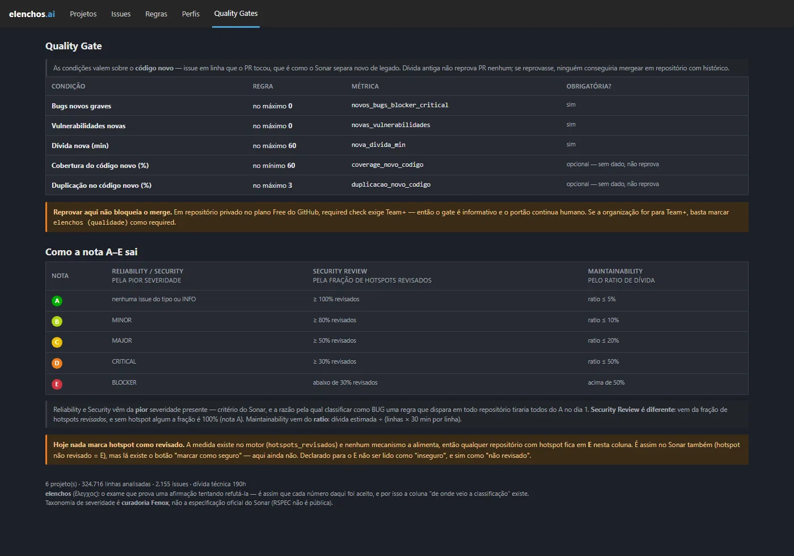
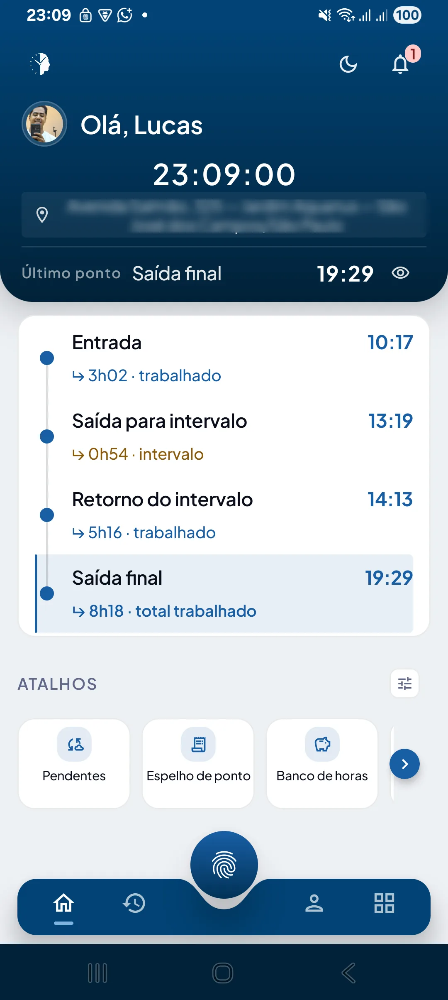
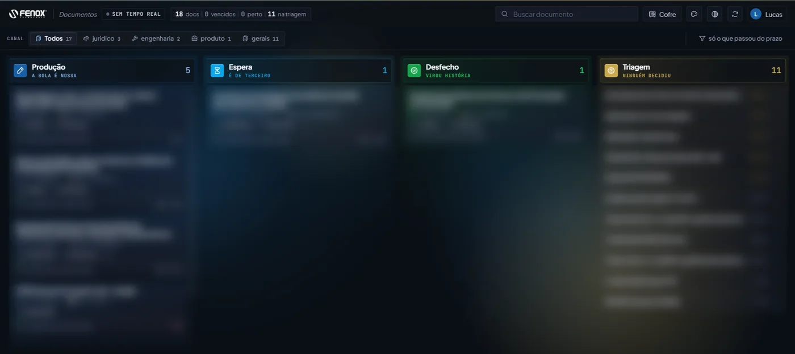
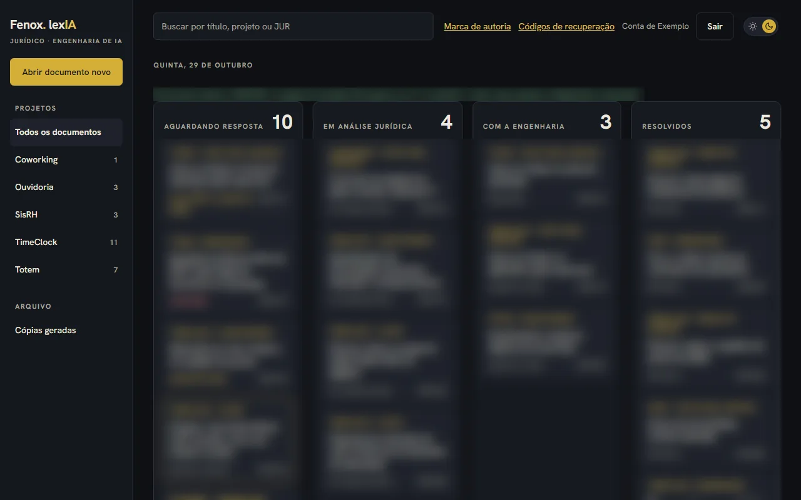
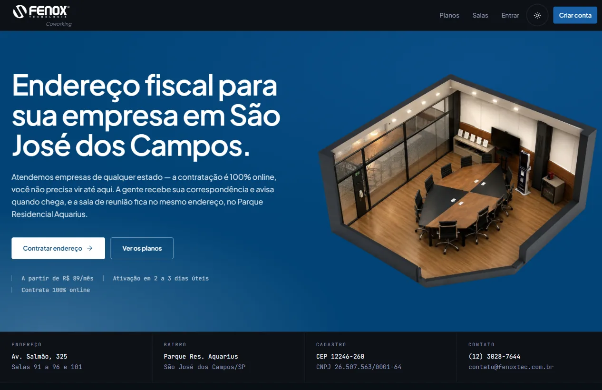
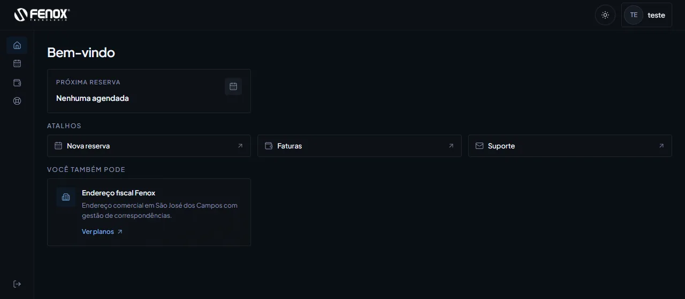
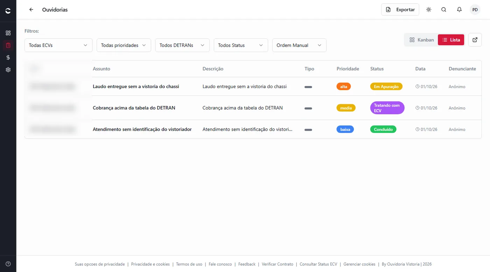
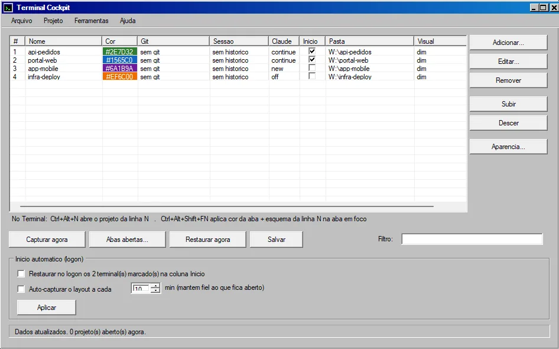

● healthyPython · SARIF · PostgreSQL
Elenchos
Our own code quality platform, no SonarQube server. It reads SARIF from any linter, grades every repo from A to E and blocks merges that make new code worse.
Built end to end
● AI Engineer · Fenox Tecnologia · São José dos Campos, Brazil
I put AI coding agents to work on real production software, and build what keeps them honest: quality gates, human approvals and fast pipelines.
Real screens from private repos at Fenox. Client names, internal documents and addresses are blurred.

● healthyPython · SARIF · PostgreSQL
Our own code quality platform, no SonarQube server. It reads SARIF from any linter, grades every repo from A to E and blocks merges that make new code worse.
Built end to end

● in productionKotlin · Jetpack Compose
The Android app employees use to clock in. Shift, breaks and hours at a glance, plus facial enrollment built with LGPD in mind: anyone can delete their face data with one button.
Most of the commits

internal data blurred● in productionNode.js · Discord · GitHub Actions
Merging to main doesn't deploy. A person does. Green CI posts an approval card in Discord, and only allowlisted people can ship. The same bot runs our documents board.
Built end to end

internal data blurred● in productionJavaScript · Python
Engineering and legal, in one place. Our lawyer gets every technical question, document and decision here instead of on WhatsApp, with deadlines and a full audit trail.
Built end to end


● in productionTypeScript · PostgreSQL · Pix
Rooms, plans and invoices for a coworking space. The public site and the member app: booking, contracts, Pix checkout. It became the base of a design system for Fenox web products.
Most of the commits

client names blurred● in productionTypeScript · Java
Complaints and billing for vehicle inspection companies. People file complaints, companies answer them, and plans are billed by Pix or boleto.
Contributor

● runningC# · WinForms · HLSL
One terminal tab per project, back after every reboot. It saves each project's tab, color and layout, restores them at logon, and shows what each AI session costs.
Built it
I started at Fenox answering support tickets. Three years later I run AI agents across our production code. The part I care about most is the boring one: the checks that make sure what they write is right before anyone ships it.
Contributions, last 12 months

Open to remote roles and good conversations. Portuguese, English and some Spanish.